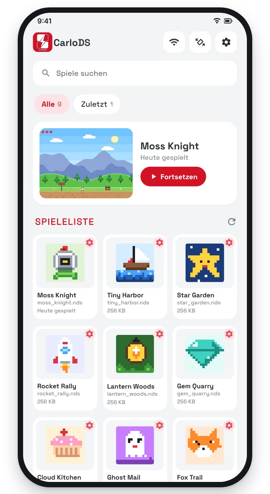
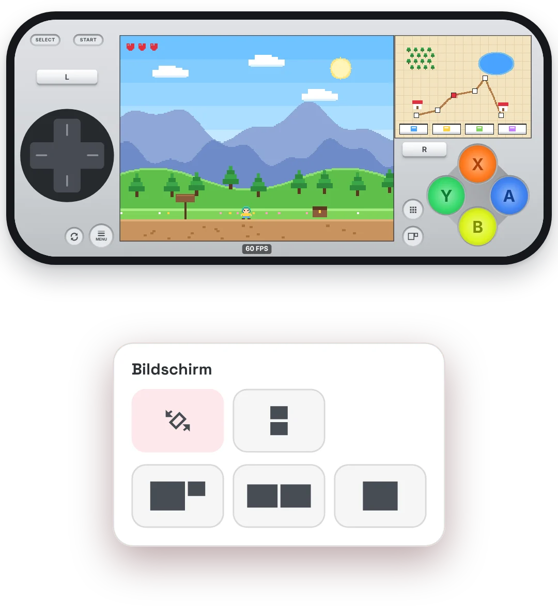

Funktionen
CarloDS ist ein NDS-Emulator für Android-Smartphones und -Tablets. Der Emulationskern – ARM9 und ARM7, 2D- und 3D-Grafik, Audio, Drahtlos und integriertes BIOS – ist vollständig selbst entwickelt und anhand umfangreicher Tests auf Originalhardware kalibriert. Die meisten Spiele laufen ohne BIOS-Dateien; ZIP wird unterstützt.
Eigener, hochpräziser Kern
- Kalibrierung anhand von HardwaretestsCPU-Timing, DMA, 3D-Darstellung, Kantenglättung, Clipping u. a.
- Zwei KerneDer genaue Kern, nah an der Originalhardware, und der schnelle Kern mit JIT für deutlich höheres Tempo
- Integriertes BIOS; eigene BIOS- und Firmware-Dateien im Spieleordner werden automatisch verwendet

Spielebibliothek
- Symbole und Titel werden automatisch ausgelesen; Unterordner und ZIP-Dateien
- Suche, zuletzt gespielte Titel und Schnellzugriff „Fortsetzen“
- Eigene Cover für jedes Spiel
- Optionaler Leistungstest beim ersten Start mit Empfehlung der optimalen Einstellungen

Bildschirmlayouts und Steuerung
- Hochformat, Querformat groß + klein, Querformat nebeneinander und Querformat mit einem Bildschirm – per Tipp umschaltbar, mit Bildschirmtausch
- Toucheingabe auf dem unteren Bildschirm
- Bildschirmausrichtung frei wählbar
- Bildschirmtasten für die Controller-Nutzung ausblendbar
- Deckel schließen und öffnen (die meisten Spiele ruhen bei geschlossenem Deckel)

Grafik und Leistung
- Voreinstellungen für Einsteiger-, Mittelklasse- und High-End-Geräte sowie eine Empfehlung nach dem Leistungstest
- 3D in bis zu 4-facher Auflösung (oder automatisch), 3D-Kantenglättung, Texturglättung und weiche 2D-Skalierung
- RendererSoftware, OpenGL ES und Vulkan
- FilterGlättung, LCD, Scanlines, xBR und CAS-Schärfung; Helligkeit und Kontrast einstellbar
- Leistungsoptionen16-Bit-Ausgabe, Multithread-3D, sofortige Geometrie, automatisches Frameskipping
- Grafik-, Leistungs- und Controller-Einstellungen pro Spiel
- BildschirmanzeigeStartanimation, Bildrate und detaillierte Leistungsdaten

Speichern und Werkzeuge
- Mehrere Speicherstände mit Rückgängig-Funktion; automatische Sicherung bei Unterbrechung
- Vorspulen (bis 4×), Zurückspulen (5, 10 oder 15 Sekunden pro Tipp) und Turbotasten mit einstellbarer Geschwindigkeit
- Schnellzugriffe im SpielLautstärke, Schnellspeichern, Screenshot, Deckel, Cheats, Speichersuche, Zurückspulen
- CheatsAction-Replay-Codes, Datenbanken usrcheat.dat und cheats.xml sowie .mch-, .dct-, .cht- und Textdateien
- Speichersuche im schwebenden Fenster bei laufendem Spiel, mit Speicheransicht und Schreibprotokoll

Drahtlosspiel und Download-Inhalte
- Lokales Drahtlosspiel zwischen Geräten im selben WLAN oder über einen mobilen Hotspot
- Integrierter Ersatz für den eingestellten Onlinedienst, bereitgestellt von Ihrem Gerät im lokalen Netzwerk (ausgewählte Spiele)
- Download-Inhalte (experimentell)Geschenke und Verteilungen sind integriert und offline abrufbar

Weitere Funktionen
- Unterstützung für RetroAchievements
- Cloud-Speicherstände über Google Drive
- Unterstützung für Controller und Tastatur mit frei belegbaren Tasten
- Mikrofon für Spiele mit Pusten oder Sprechen; Aufnahme nur während des Spiels
- GBA-SteckplatzGBA-Spiel aus RetroGenY, unserem GBA-Emulator, oder Rumble Pak mit Gerätevibration
- KonsolenprofilSpitzname, Geburtstag, Lieblingsfarbe, Nachricht und Sprache
- ProblemmeldungDiagnoseprotokolle per E-Mail an den Entwickler senden